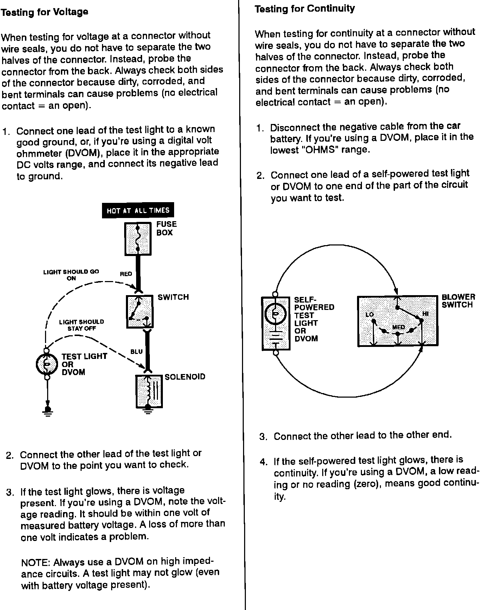

Operation CHARM
: Car repair manuals for everyone.
Home
>>
Acura
>>
1993
>>
Integra L4-1678cc 1.7L DOHC (VTEC) FI
>>
Repair and Diagnosis
>>
Wiper and Washer Systems
>>
Diagrams
>>
Diagnostic Aids
>>
Troubleshooting Tests
>>
Testing For Voltage/Continuity
Testing For Voltage/Continuity
Troubleshooting Tests: Testing For Voltage And Testing For Continuity:
